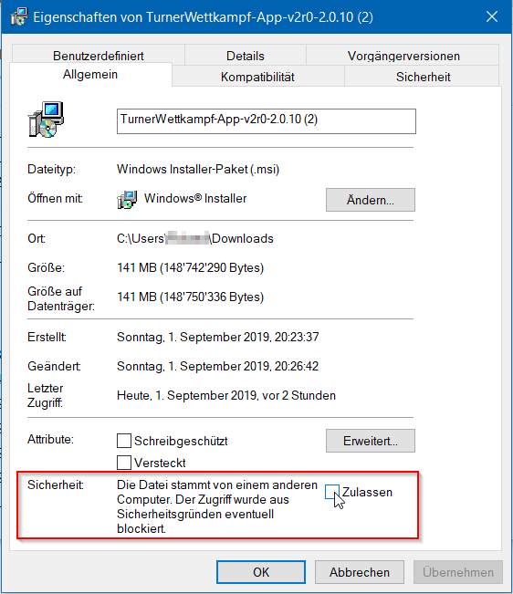

KuTu
Wettkampf-App für Kunst- und Geräteturnen
Features:
- Verwaltung von Turner mit ihren Vereinen
- Erstellen von Wettkämpfen (KuTu, GeTu und Athletiktest)
- Zuweisen von Turner in eine Kategorie/ein Programm eines Wettkampfs
- Import von Turner aus dem Clipboard (z.B. kopiert aus Turneranmeldung-Excel) mit Dupletten-Abgleich
- Riegeneinteilung (mit Vorbelegungs-Vorschlag)
- Alternative Riegeneinteilung z.B. für separaten, gerätespezifischen Durchlauf
- Turner Kategorien-Wechsel / Programm-Umteilung
- Generieren von Notenblätter, Riegen-Notenblätter und Kategorienlisten
- Ranglisten Erstellung mit div. Gruppierungskriterien Option für alphabetisch nach Name sortierter Rangliste (für Kategorien-Tests)
- Netzwerk-Modus mit Mobile-App für die Erfassung der Resultate und für die Anzeige der Resultate
- Regelwerk für die korrekte Rangierung bei Punktegleichstand
- Integration in Dateisystem
- für die Hinterlegung von Vereins- oder Wettkampfspezifischen Logos
- für die Ablage der generierten Exportdateien (Notenblätter, Ranglisten, Wettkampfdaten)
- Import und Export von Wettkampfdaten
- Analysen (grafische Auswertung) auf den Ebenen Turner, Verein, Gerät mit div. Gruppierungskriterien, Jahr- und Wettkampfübergreifend.
Systemanforderungen:
Die App wird per Installer installiert und bringt die notwendige Java-Runtime mit sich.
Download:
Aktuellste Version
siehe Release-Log- Benutzeranleitung der Version 2.0
- osx dmg Installer (138Mb), Version 2.0.13
- osx pkg Installer (138Mb), Version 2.0.13
- Win64 msi Installer (145Mb), Version 2.0.13
- Linux 64bit deb package (126Mb), Version 2.0.13
- Docker-Image für eigenen Serverbetrieb
Vorschau Version (2.2)
Achtung - diese Version ist nicht für den produktiven Betrieb freigegeben. Die Version ist noch in der Entwicklung. siehe Release-Log- Benutzeranleitung der Version 2.2 (Preview)
- osx dmg Installer (138Mb), Version 2.2 (Preview)
- osx pkg Installer (138Mb), Version 2.2 (Preview)
- Win64 msi Installer (145Mb), Version 2.2 (Preview)
- Linux 64bit deb package (126Mb), Version 2.2 (Preview)
Ältere Versionen
- osx dmg Installer (127Mb), Version 2.0.12
- osx pkg Installer (119Mb), Version 2.0.12
- win64 msi Installer (119Mb), Version 2.0.12
- Linux 64bit deb package (119Mb), Version 2.0.12
- Benutzeranleitung der Version 1.2
- osx dmg Installer (98Mb), Version 1.2
- win64 msi Installer (82Mb), Version 1.2
- win32 msi Installer (82Mb), Version 1.2
- Benutzeranleitung der Version 1.1
- osx dmg Installer (98Mb), Version 1.1.4
- win64 msi Installer (82Mb), Version 1.1.4
- win32 msi Installer (82Mb), Version 1.1.4
Installationshinweise
Die Installationsdatei ist nicht signiert und führt deshalb bei der Installation zu Sicherheitswarnungen - oder die Installation bricht ab.
Es gibt für die jeweiligen Betriebssysteme Workarounds, mit denen die Installation ordentlich ausgeführt werden kann.
Windows 10
Nach dem Download der msi-Datei ist es notwendig, die folgende Einstellung im Eigenschaft-Dialog (rechte Maustaste auf der msi-Datei und dann Eigenschaften) vorzunehmen:

Test-Installation
Zum Ausprobieren oder zum Testen der nächsten Programm-Bereitstellung lässt sich eine Test-Installation parallel zur produktiv installierten Version betreiben.
Siehe Hinweise, wie die Test-Installation aufgesetzt werden kann.
Screenshots:
 Dashboard, Einstieg in die Athleten- und Wettkampf-Bewirtschaftung.
Dashboard, Einstieg in die Athleten- und Wettkampf-Bewirtschaftung.
 Liste der Turner-/Innen eines Vereins.
Liste der Turner-/Innen eines Vereins.
 Erfassungsblatt von Wettkampf-Resultaten. Hier können die Resultate von Athlet-/Innen gruppiert nach Riege oder nach Kategorie/Programm erfasst werden. Zudem lassen sich von hier Notenblätter drucken.
Erfassungsblatt von Wettkampf-Resultaten. Hier können die Resultate von Athlet-/Innen gruppiert nach Riege oder nach Kategorie/Programm erfasst werden. Zudem lassen sich von hier Notenblätter drucken.
 Für den Athletiktest gibt es viel mehr Disziplinen wie bei GeTu oder KuTu-Wettkämpfen. Mit der Aufteilung in Kraft- und Beweglichkeits-Diszipline entsteht eine bessere Übersicht.
Für den Athletiktest gibt es viel mehr Disziplinen wie bei GeTu oder KuTu-Wettkämpfen. Mit der Aufteilung in Kraft- und Beweglichkeits-Diszipline entsteht eine bessere Übersicht.
 Rangliste, Vereinsebene-Wettkampfuebergreifend.
Rangliste, Vereinsebene-Wettkampfuebergreifend.
 Rangliste, individuell konfiguriert.
Rangliste, individuell konfiguriert.
 Turnerauswertung.
Turnerauswertung.
 Turnerauswertung auf Vereinsebene
Turnerauswertung auf Vereinsebene